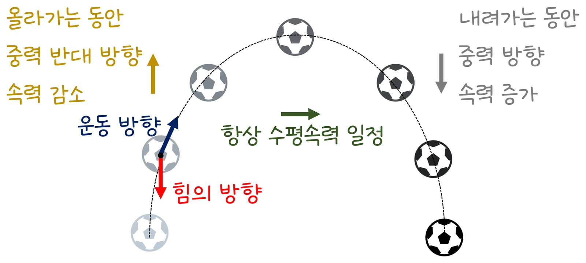

고3 역학과 에너지 · Ⅰ 시공간과 운동 · 웹툰 2화 「30도와 60도」
실험에서 처음 속력 v₀, 발사각 θ, 발사 높이 h₀를 바꿔 가며 최고 높이·체공 시간·사거리를 재고 에너지 막대를 관찰했습니다. 45°에서 사거리가 최대였고 30°와 60°는 같았으며, 발사 높이가 있으면 최적 각도가 45°보다 작아졌고 역학적 에너지는 일정했습니다. 두 독립 운동의 합성과 에너지 보존을 정리합니다.
실험 데이터 되짚기
v₀ = 20 m/s, g = 9.8 m/s², 공기 저항 없음. h₀ = 0 기준.
| 발사각 | v_x | v_y (처음) | 최고 높이 H | 체공 시간 T | 사거리 R |
|---|---|---|---|---|---|
| 15° | 19.3 m/s | 5.2 m/s | 1.4 m | 1.06 s | 20.4 m |
| 30° | 17.3 m/s | 10.0 m/s | 5.1 m | 2.04 s | 35.3 m |
| 45° | 14.1 m/s | 14.1 m/s | 10.2 m | 2.89 s | 40.8 m (최대) |
| 60° | 10.0 m/s | 17.3 m/s | 15.3 m | 3.53 s | 35.3 m |
| 75° | 5.2 m/s | 19.3 m/s | 19.0 m | 3.94 s | 20.4 m |
| 45°, h₀ = 1 m | 14.1 m/s | 14.1 m/s | 11.2 m | 2.96 s | 41.8 m |
합이 90°인 두 각(30°·60°, 15°·75°)은 sin2θ가 같아 사거리가 같습니다. 질량은 궤적에 영향이 없고, 최고점에서 v_y = 0이지만 v_x가 남아 속력은 최소(v₀cosθ)이지 0이 아닙니다.
비스듬히 던진 물체는 수평 방향 등속 운동과 연직 방향 등가속도 운동(가속도 −g)을 동시에 합니다. 처음 속도를 분해하면 v_x = v₀cosθ(일정), v_y = v₀sinθ − gt; 위치는 x = v₀cosθ·t, y = h₀ + v₀sinθ·t − ½gt²이고 t를 소거하면 포물선. 웹툰(g = 10, v₀ = 20, 30°): v_x 17.3, v_y 10 → 최고점 1 s, 최고 높이 5 m, 비행 2 s, 사거리 34.6 m. 예측 게임 — 30°와 60° 중 어느 쪽이 멀리? 제로 ‘60°가 오래 떠 있으니 더 멀리’, 뭉치 ‘같다’: 60°는 v_x 10, 비행 3.46 s → 34.6 m로 같습니다. 60°는 오래 떠 있지만 수평 속력이 작고 30°는 수평 속력이 크지만 빨리 떨어집니다. 45°에서 최대(40 m). 연직 방향만 보면 위로 던졌다 떨어지는 운동, 수평 방향만 보면 그냥 굴러가는 운동입니다.
교재 그림
비스듬히 던진 공 — 힘은 늘 아래, 수평 속력은 그대로

공에 작용하는 힘(중력)은 늘 아래쪽이라 연직 방향 속력만 바뀌고, 수평 방향으로는 힘이 없어 속력이 일정합니다. 아래 움직여 보기에서 직접 확인해 보세요.
움직여 보기
θ와 90° − θ — 누가 더 멀리 갈까?
빨강(θ)과 파랑(90° − θ)을 v₀ = 20 m/s로 동시에 던집니다. 땅에서 던지면 두 공은 같은 곳에 떨어지지만 큰 각은 오래 떠 있고 작은 각은 빨리 닿습니다. 45°에서 사거리가 가장 깁니다(40.8 m). 1 m 높이에서 던지면 어떻게 달라지는지도 보세요. (공기 저항 무시, g = 9.8 m/s²)
뭉치 ‘최고점에서는 공이 잠깐 멈추니 속력이 0?’ — 연직 성분만 0이고 수평 성분 17.3 m/s는 그대로라 운동 에너지가 남습니다. 공 0.6 kg, 30°: 처음 KE 120 J, PE 0; 최고점 KE ½ × 0.6 × 17.3² ≈ 90 J, PE 0.6 × 10 × 5 = 30 J → 합 120 J = 120 J(역학적 에너지 보존). 동영상 분석으로 매 순간 속력·높이를 재면 합이 거의 일정하고 끝부분에서 조금 줄어드는 것은 공기 저항 — 모형에서 뺀 요인이 실제 자료에 드러나는 것도 탐구입니다. 발사 높이 h₀가 있으면 체공 시간이 길어져 사거리가 늘고 최대 사거리 각도는 45°보다 작아집니다(투포환 약 2 m → 40~42°).
움직여 보기
최고점에서도 공은 멈추지 않는다 — 속도 성분과 에너지
파랑 v_x는 처음부터 끝까지 길이가 같고, 주황 v_y만 줄었다가 아래로 커집니다. ‘최고점에서 보기’를 눌러 보세요 — v_y = 0이어도 v_x가 남아 KE가 0이 아니고, KE + PE는 늘 120 J입니다. (공 0.6 kg, v₀ = 20 m/s, g = 10 m/s², 공기 저항 무시 — 웹툰 2화 숫자)
공기 저항을 무시했습니다. 실제 야구공·골프공은 저항으로 사거리가 이론의 60~70 %로 줄고 궤적이 대칭이 아니며(내려올 때 더 가파름) 최대 사거리 각도가 35~40°로 낮아집니다. 회전(마그누스 효과)은 궤적을 휘게 하고 양력으로 비거리를 늘리기도 하며(골프의 백스핀), 매우 먼 사거리에서는 지구 자전·곡률도 작용합니다. 농구 슛·투포환·분수·소방 호스 물줄기·포병 사격표 모두 포물선 운동 계산에서 출발합니다.
20 m/s·45° → H 10.2 m, T 2.89 s, R 40.8 m · 30° = 60° 사거리 35.3 m · 최고점 속력 = v₀cosθ (0 아님)
“2라운드! 같은 속력 20 m/s로 30°와 60°로 던지면, 어느 쪽이 더 멀리 갈까? 난 ‘같다’.” “60°가 더 높이 올라가서 오래 떠 있으니까 더 멀리 가지!”
웹툰 2화 · 두 공이 다른 높이의 포물선을 그리며 같은 지점에 떨어진다 — 제로 1 : 1 뭉치
“최고점에서는 공이 잠깐 멈추니까 속력이 0이지?” “연직 성분만 0이야. 수평 성분 17.3 m/s는 그대로 있어. 그래서 최고점에서도 운동 에너지가 남아 있지.”
웹툰 2화 · 처음 120 J = 최고점 90 J + 30 J
v_y = 30 sin40° = 19.3 m/s, v_x = 23.0 m/s. H = 19.3² ÷ 19.6 = 19.0 m, T = 2 × 19.3 ÷ 9.8 = 3.94 s, R = 23.0 × 3.94 = 90.5 m(= 900 × sin80° ÷ 9.8).
h₀ 덕분에 어차피 체공 시간이 늘어나므로 수평 속력을 키우는 쪽(각도를 낮춤)이 사거리에 더 유리합니다. v₀ = 14 m/s, h₀ = 2 m면 최적 약 42°. 절벽에서 던지면 더 낮아집니다.